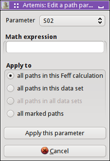
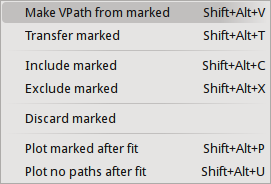

The Data window
After importing data from an ATHENA project file, several things happen:
A new Data window is created for interacting with that data set and
the various controls are set to values taken from the ATHENA
project file or from ARTEMIS' defaults.
A message is written to the status bar in the Main window.
The data are plotted in k-space.
The data are transferred to the plotting list in the Plot window.
An entry is placed in the Data list on the main window.
Here is the Plot window as it initially appears:
This button is used to transfer this data set into the plotting list
in the Plot window.
This is the characteristic value of this data set. Typically, this is
just incremented for each data set as it is imported. The CV can be
used as a special parameter in math expressions.
This text box shows where this data set came from. Typically, this
shows the fully resolved file name for an ATHENA project file,
followed by the index of the data from that project file.
These five buttons generate special plots using this data set. Each
of the special plots types is explained below. Like the Fit button
from the main window, these buttons are recolored after a fit
according to the value of the fit's
happiness parameter.
This text box contains any title lines associated with the data.
These controls are used to set the functional form of the windows for
forward and backward Fourier transforms. The Rmin and
Rmax values are also used as the fitting range. The menus for
selecting the windows functions are only displayed when the
♦Artemis → window_function is
set to “user”.
These check buttons are used to set the k-weight values used to
evaluate the fit. Note that these are check
buttons and radio buttons not – more
than one can be selected at a time. The default is that
all of 1, 2, and 3 checked, resulting in a multiple k-weight fit.
The default can be changed by editing the
♦Fit → k1,
♦Fit → k2, and
♦Fit → k3 parameters.
This area contains several other parameters related to this data set.
When the first check button is checked, this data will be included in
the fitting model. Unchecking it is a way of removing a data set from
a multiple data set fit without actually disposing of the data. The
second check button instructs ARTEMIS to automatically transfer
this data set to the
plotting list
at the end of a fit. The third
check button turns on background co-refinement. The ε
text box allows you to specify a measurement error fit this data set.
Finally, the last check button turns phase corrected plotting on and
off. See the discussion of
phase corrected plots.
This status bar is used to display messages specifically related to
this data set. These messages are logged in
the status buffer.
The paths list will become populated as paths are associated with
this data set. How that works will be explained in
the next chapter.
When no paths have yet been associated with a data set, this default
page is displayed. The lines of blue text are sensitive to mouse
clicks and initiate the import of certain kinds of data. All of those
import options will be explained elsewhere in this document.
After one or more paths have been associated with this data set, the
Data window looks something like this.
Note that the paths list is
populated with the paths assigned to these data and that the right
hand side of the Data window displays the details about a particular
path. Clicking on an item in the paths list causes that path to be
displayed on the right.
Note that each path in the path list has a check button associated
with it. These check buttons are involved in much of the
functionality described below.
Some vocabulary: The highlighted path is displayed on the right and is
said to be selected. When a paths check
button is checked, it is said to be marked.
In this example, the first path is selected and no paths have yet been
marked.
Special plots
The five plot buttons on the Data window make special plots of that
data set along with its fit (if a fit has been run). Each of these is
an elaborate, multi-component plot that cannot be made using the tools
on the Plot window. The examples shown here are for a fit to gold
metal out to the fourth coordination shell.
The k123 plot
This is the “k123” plot. It shows the data
and fit as χ(k). Each k-weighting from 1 to 3 is shown. The
data with k-weighting of 2 is plotted normally. The other two
k-weightings are scaled by the appropriate number such that all three
k-weighting appear to be about the same size in the plot. The Fourier
transform window function is drawn over the k-weight of 1 spectrum.
The R123 plot
This is the “R123” plot. It shows the data
and fit as χ(R). The Fourier transform has been done with each
k-weighting from 1 to 3. The data with k-weighting of 2 is plotted
normally. The other two k-weightings are scaled by the appropriate
number such that all three k-weighting appear to be about the same
size in the plot. The back-Fourier transform window function is drawn
over the k-weight of 1 spectrum to indicate the range over which the
fit was evaluated (assuming the fit space is R, as is the default).
The radio button in the
Plot window
for selecting the part of χ(R) is respected when
this plot is made.
The Rmr plot
The “Rmr” plot is the plot
displayed by default after a fit. It shows the magnitude and real part of
χ(R) using the value of k-weighting selected in the Plot window.
The back-Fourier transform window function is drawn over the magnitude
spectrum to indicate the range over which the fit was evaluated
(assuming the fit space is R, as is the default).
The Rk plot
The “Rk” plot is a stacked plot with the
“Rmr” on the bottom and χ(k) on the
top. The value of k-weighting selected in the
Plot window
is used. Fourier transform windows are drawn over the χ(k) and
|χ(R)| spectra.
This is Bruce's favorite way of presenting data for
publication. It is a compact representation of the data and the fit.
All the interesting ways of visualizing the data and fit are presented
on equal footing.
The kq plot
The “kq” plot shows the data and fit as
χ(k) and χ(q). The value of k-weighting selected in the
Plot window
is used. The Fourier transform windows are drawn over the χ(k)
spectra.
Data menu bar
The Data menu
 This menu displays functions that can act on the data set displayed in
that window.
This menu displays functions that can act on the data set displayed in
that window.
-
Rename
-
Change the name of this data set. This is the name displayed next to
the transfer button, in the plotting list, in the log file, and in
plot legends.
-
Replace
-
Change the χ(k) by importing new data from an ATHENA
project file. This is used to apply the current fitting model to a
new data set.
-
Discard
-
Throw away this data set and its window. Also remove this data set
from the Data list in the Main window.
-
Save data
-
Write this data set to a column data file. The χ(k) output
option will write a file with columns for k, χ(k), k⋅χ(k),
k²⋅χ(k), k³⋅χ(k), and the window function. The χ(R)
output option will write a file with columns for R, the real part, the
imaginary part, the magnitude, the phase, and the window function.
The χ(q) option is of the same form a the χ(R) option.
-
Save data and fit
-
Write the data, the fit, and several other arrays to a data file in
one of various forms of k, R, or q. This will have columns for the
abscissa, the selected form of the data, and the corresponding forms
of the fit, the background (if co-refined), the residual, the running
R-factor, and the window.
-
Save data and paths
-
This will save the data along with each marked path to a column data
file. The columns will be the same as for the data+fit output.
-
Other fitting standards
-
This submenu allows you to import a variety of special path types, including
quick first shell paths and
empirical standards.
(Structural units have not yet been implemented in Artemis.)
-
Balance interstitial energies
-
(This feature has not yet been implemented in Artemis.)
-
Set all degeneracies
-
These two options allow you to control the degeneracy values of all
the paths in the fit. The choices are to set them all to 1 or to have
them all use their degeneracies from their respective FEFF
calculations.
-
Set window function
-
When the ♦Artemis → window_function
parameter is not set to “user”, this submenu
will be displayed. It allows the user to change the window function
to be used for both forward and backward Fourier transforms. Note
that setting the window function in this way uses the same functional
form for transforms in both directions. If you want to control the
two functions independently (for some inscrutable reason), you must
set ♦Artemis → window_function
to “user”.
-
Export parameters
-
In a multiple data set fit, this allows you to constrain the data sets
to have the same choice of Fourier transform parameters.
(This feature has not yet been implemented in Artemis.)
-
Set kmax to Ifeffit's suggestion
-
Use IFEFFIT's suggestion for an appropriate value of kmax.
-
Show epsilon
-
Show the value of ε computed from the noise in this data
set. The value will be displayed in the Data window status bar.
-
Show Nidp
-
Show the number of independent points computed from the Fourier
transform and fitting range. The will be displayed in the Data
window status bar.
The Path menu
|
 This menu displays various functions that can be appied to the paths
associated with this data set.
This menu displays various functions that can be appied to the paths
associated with this data set.
-
Transfer
-
Transfer the displayed path to the plotting list in the
Plot window.
-
Rename
-
Change the name of the displayed path. This is the name displayed next to
the transfer button, in the plotting list, in the log file, and in
plot legends.
-
Show
-
Post a dialog box with IFEFFIT's current evaluation of all
path parameters for the displayed path.
-
Save path
-
Write the displayed path to a column data file. The χ(k) output
option will write a file with columns for k, χ(k), k⋅χ(k),
k²⋅χ(k), k³⋅χ(k), and the window function. The χ(R)
output option will write a file with columns for R, the real part, the
imaginary part, the magnitude, the phase, and the window function.
The χ(q) option is of the same form as the χ(R) option.
-
Clone
-
Make a copy of the displayed path and insert it into the path list.
The degeneracies of the original and cloned path will be half the
original degeneracy.
-
Add path parameter
-
|
 Post the dialog
on the right, which is used to add a path parameter
math expression to multiple paths associated with this or other data
sets. This is a convenience allowing you to edit the path parameters
for many paths at the same time.
Export path parameters
Push the math expressions of each path parameter from the displayed
path to other paths. This submenu has options for pushing these
values to the other paths from the same FEFF calculation, to the
marked paths, to all paths in this data set, or to all paths in all
data sets.
Quick 4 parameter fit
This is a convenience function for setting up a simple, one-shell
fit. Selecting this menu item will create 4 parameters in the GDS
window and use those four parameters as the math expressions for
S²₀, E₀, ΔR, and σ² for each path assigned to
this data set. This is intended only for a one-path, one-shell fit.
While it may be tempting to expect broader utility out of this
function – don't. It really only serves this
narrow purpose.
Discard
Discard the displayed path, removing its window, and removing it from
the path list.
The Marks menu
|
 Much of ARTEMIS' functionality revolves around groups of
marked paths. This menu contains a number of shortcuts for marking
paths. Note that each of these has a keyboard shortcut
given on the right side of the menu. Learning the shortcuts for
marking functions that you use frequently is key to the effective use
of ARTEMIS.
Much of ARTEMIS' functionality revolves around groups of
marked paths. This menu contains a number of shortcuts for marking
paths. Note that each of these has a keyboard shortcut
given on the right side of the menu. Learning the shortcuts for
marking functions that you use frequently is key to the effective use
of ARTEMIS.
Marking via these functions is cumulative. That is, most of them only
add to the set of marked paths. Choosing to mark, say, all single
scattering paths will not unmark any marked multiple scattering paths.
Several of these functions will post a dialog for receiving input.
Marking by regular expression (regex) will prompt for a perl-style
regular expression to match against the labels in the path list. The
pattern you provide will be used only if it can be successfully parsed
as a valid perl regular expression.
Marking either greater than or less than an A value will prompt for
a cutoff in path ranking.
Marking either greater than or less than an R value will prompt for
that R value.
Marking before or after the current path will mark those above or
below the displayed path in the path list. Included and excluded
refers to whether a path is selected as being included in a fit.
 When using regular expression marking, you have access to perl's
entire regular expression functionality. If you know what a
“(?{ code })” extended expression is and you
use it foolishly, you only have yourself to blame.
When using regular expression marking, you have access to perl's
entire regular expression functionality. If you know what a
“(?{ code })” extended expression is and you
use it foolishly, you only have yourself to blame.
The Actions menu
|

Every item in this menu operates either on the set of included paths
or the set of marked paths. Again, keyboard shortcuts are given in
the menu.
The first two options will make
a VPath
out of either all the paths for this data set or the marked paths.
The VPath will be placed in the plotting list in the
Plot window
and a plot will be made in R.
The option to make the sum of all paths is particularly useful for
comparing the fittingmodel to the data without actually running the fit.
The next two options will transfer paths to the plotting list, then
make a plot in R.
The next two options will cause the set of marked paths to be included
in or excluded from the fit. The next item computes the value of
a bond valence sum
using the set of marked paths. You will be prompted for some
information about the absorber and scatterer.
The next item causes all marked paths to be discarded from your
fitting project and removed from the path list.
The final two items are about controlling what gets transferred into the
plotting list after a fit. The next to last item causes all marked
paths to be transferred. The last item removes all paths from the list
of things transferred
The Debug menu
|
 This menu displays various dialog boxes showing aspects of the current
state if IFEFFIT or ARTEMIS. These are mostly used for
debugging purposes. This menu is only displayed if the
♦Artemis → debug_menus
configuration parameter is set to a true value.
This menu displays various dialog boxes showing aspects of the current
state if IFEFFIT or ARTEMIS. These are mostly used for
debugging purposes. This menu is only displayed if the
♦Artemis → debug_menus
configuration parameter is set to a true value.
The Data help menu
|
 This menu is used to display the sections on the Data window or the
Path page from the document.
This menu is used to display the sections on the Data window or the
Path page from the document.
|